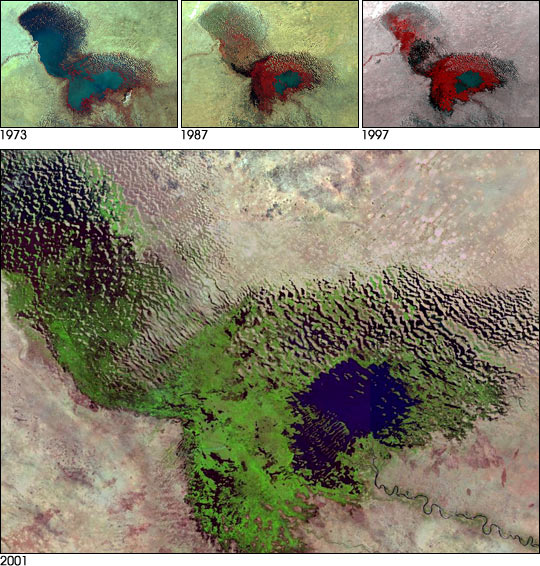
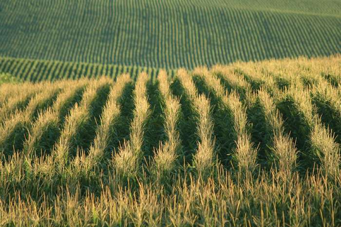

Dry lands occupy approximately 40–41% of Earth’s land area and are home to more than 2 billion people.It has been estimated that some 10–20% of dry lands are already degraded, the total area affected by desertification being between 6 and 12 million square kilometres, that about 1–6% of the inhabitants of dry lands live in desertified areas, and that a billion people are under threat from further desertification.
Nearly 2,750,000 square km of croplands are irrigated. Over 60 percent of these irrigated areas occur in dry lands. Certainly, some dry land areas have been irrigated for millennia, but other areas are more fragile. Of the irrigated dry land, 30 percent (an area roughly the size of Japan) is moderately to severely degraded, and this percentage is increasing.
The main cause of declining biological productivity in irrigated croplands is the accumulation of salts in the soil. There is an important difference between rainwater and the water used for dry land irrigation. Rainwater results from the condensation of water evaporated by sunlight. Essentially, rainwater is distilled seawater or lake water. In contrast, water used for irrigation is the result of runoff from precipitation. Runoff percolates through the soil, dissolving and collecting much of the salts it encounters, before finding its way into rivers or aquifers. When used to irrigate crops, runoff evaporates and leaves behind much of the salts that it collected. Irrigated crops need an average of 80 cm (about 30 inches) of water annually. These salts can build up in the soil unless additional water is used to flush them out. This process can rapidly transform productive land into relatively barren salt flats scattered with halophytes (plants adapted to high levels of salt in the soil).
Most salt-degraded cropland occurs in Asia and southwestern North America, which account for 75 and 15 percent of the worldwide total, respectively. In Asia, Iraq has lost over 70 percent of its irrigated land to salt accumulation. In Russia, much of the irrigated land located where the Volga River runs into the Caspian Sea may last only until the middle of the 21st century before the buildup of salts makes it virtually unusable. Such losses are not restricted to developing countries. In the United States, salt accumulation has lowered crop yields across more than 50,000 square km (19,000 square miles), an area that is about a quarter of the country’s irrigated land.
Dry lands also support rain-fed crops. Before cultivation, such areas were often vast grasslands. They now cover about 5 million square km (about 2 million square miles) and account for roughly one-third of all croplands worldwide. They receive less than 60 cm (about 24 inches) of rain each year, and thus they are at the margin of what farmers can use for crops without at least some irrigation. Rainfall can vary considerably from one year to the next, so those lands may experience droughts that often lead to crop failure. Globally, more than 2,000,000 square km (about 770,000 square miles) of rain-fed croplands are moderately to severely degraded, and each year about 1 percent of those lands is abandoned.
The crops grown on dry lands are annuals; each year they emerge from seed, mature, and die. Grains such as wheat and corn (maize) are annuals that account for roughly 85 percent of global food production. After these grains are harvested, the lands are left uncovered until the next planting season. During this time, the soil is vulnerable to erosion by wind and rain. Wind can whip up the unprotected topsoil to create severe dust storms. Such dust storms often transport the soils, along with the nutrients they contain, over long distances. Rainfall is scarce in dry lands, but when it does come it can be torrential. Heavy downpours often wash away the soils on bare ground or deplete them of their nutrients. In contrast, native grasslands contain a mix of mainly perennial species that inhibit erosion. Perennials live from year to year, have deeper roots to bind the soil, and do not leave the soils exposed for months on end.
Desertification also occurs in range lands. Typically, the damage in those environments can be separated into damage to soil and damage to vegetation. The former is more important than the latter; however, large areas experience both. The process of soil damage and loss often begins with the activities of grazing animals. Grazing livestock sometimes consume plants down to the ground. This activity weakens the individual plant; with a reduction in tissues capable of photosynthesis, its growth is greatly inhibited. In addition, livestock herds may trample and kill vegetation by walking to and from permanent water sources. Trampling destroys plant roots that bind the soil together. When rains come to those grazing lands, rivulets often form along the walking paths and wash away unprotected topsoil. Also, the repeated movement of herds over one section of the landscape can compact the soil, hindering the development of plant roots.
Livestock can substantially alter plant communities. It may be obvious that these animals reduce plant populations through their grazing activities, but livestock can also change the composition of the plant community by consuming some species and leaving others alone. The grazing pressure placed on grasses and other edible species gives a competitive advantage to cacti and other inedible species. For example, in the southwestern United States, honey mesquite (Prosopis glandulosa) is a native shrub, but it can increase its range considerably when cattle overgraze grasslands. The resulting plant community supports few livestock and is a persistent one — that is, the extensive thickets of mesquite often prevent grasses from recolonizing their former range.
The fourth area of desertification is dry woodlands, which are greatly affected by the over consumption of firewood. Across large areas of Asia and Africa, the principal raw material for cooking and heating is wood. Firewood in these areas is often converted to charcoal in earthen kilns before it is used, because charcoal gives off less smoke than wood. The conversion process is often inefficient, however, with about 75 percent of the wood’s heating potential lost. In Africa and Asia a very rough estimate of the per capita consumption of firewood is about half a ton per year. Across large areas of dry land where total plant production is roughly two tons per hectare per year, a family of four would have to clear a hectare of land or more per year. Very often, such deforested areas are not replanted. As human population densities increase, one can imagine that they might consume more wood than the land could support and create a “fuel wood crisis.”